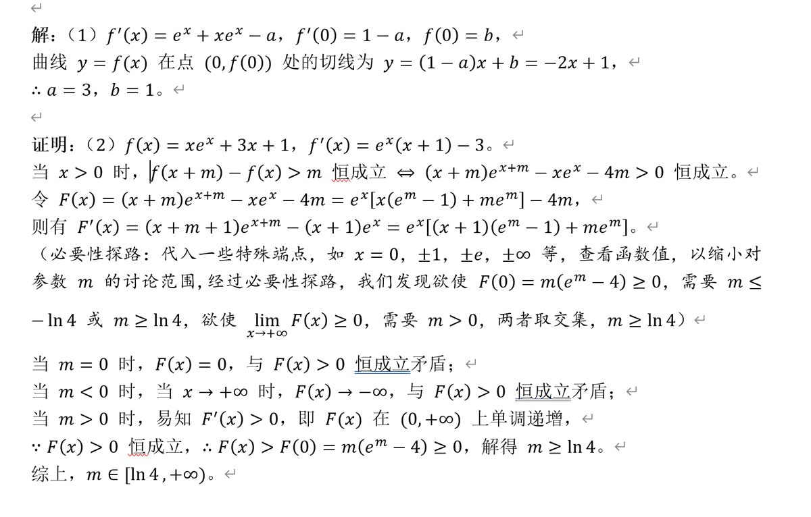

RT @kukmoon97: 先把我试做的（1）（2）问贴上来
【转化】是最基本的数学思维，把未知转换成已知，把问题转化成已学知识。第（1）问很简单，把曲线的切线方程转化为导数。第（2）问的突破口在于【必要性探路】，这是一种解题方法，把 x 的取值转化成参数 m 的讨论范围，…

【转化】是最基本的数学思维，把未知转换成已知，把问题转化成已学知识。第（1）问很简单，把曲线的切线方程转化为导数。第（2）问的突破口在于【必要性探路】，这是一种解题方法，把 x 的取值转化成参数 m 的讨论范围，…

先把我试做的（1）（2）问贴上来
【转化】是最基本的数学思维，把未知转换成已知，把问题转化成已学知识。第（1）问很简单，把曲线的切线方程转化为导数。第（2）问的突破口在于【必要性探路】，这是一种解题方法，把 x 的取值转化成参数 m 的讨论范围，从而为求得 m 的取值范围铺平道路。 https://t.co/tGb2MtgJEj
【转化】是最基本的数学思维，把未知转换成已知，把问题转化成已学知识。第（1）问很简单，把曲线的切线方程转化为导数。第（2）问的突破口在于【必要性探路】，这是一种解题方法，把 x 的取值转化成参数 m 的讨论范围，从而为求得 m 的取值范围铺平道路。 https://t.co/tGb2MtgJEj